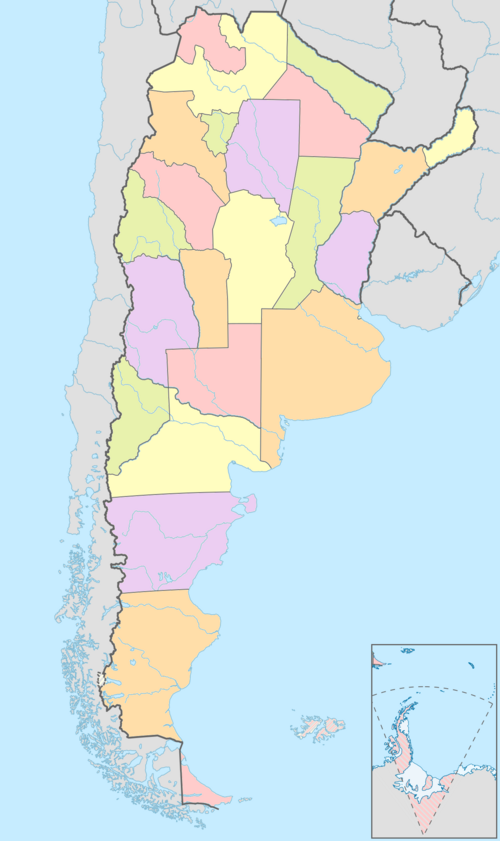

Argentina

Argentina, oficialmente República Argentina, es un país soberano ubicado en el extremo sur y sudeste de América del Sur. Adopta la forma de gobierno democrática, federal, representativa y republicana. Se constituye como un país federal descentralizado, compuesto por veintitrés provincias más la Ciudad Autónoma de Buenos Aires, designada como capital federal.
La Constitución de la Nación Argentina rige los principios de adhesión entre 23 estados asociados, denominadas provincias, bajo una sola representación con Capital Federal en la Ciudad Autónoma de Buenos Aires. Dichas jurisdicciones gozan atributos plenos en los poderes ejecutivo, legislativo y judicial. Poseen ley suprema, bandera y fuerzas policiales propias, así como el dominio de recursos naturales circunscriptos. Las facultades en defensa, moneda, derechos y garantías, se delegan al gobierno nacional. Las extensas disputas tras la emancipación española en 1816 hasta consolidar la República como tal en 1880, exigió a las provincias renunciar a la declaración soberana como partes asociadas, en tanto se reconocen preexistentes a la formación del Estado argentino.
Argentina es un país bicontinental, cuyo vasto territorio es el octavo más extenso del planeta, abarcando gran parte del Cono Sur y extendiéndose hasta la Antártida. En la plataforma americana limita al norte con Bolivia y Paraguay, al nordeste con Brasil, al este con Uruguay y el océano Atlántico, al sur con Chile y el pasaje de Drake, y al oeste con Chile.
Es el segundo país con el mayor índice de desarrollo humano (IDH) de la región, detrás de su vecino Chile. Garantiza modelos de salud y educación pública con acceso gratuito, universal y de calidad. Posee una tasa de alfabetismo en personas mayores de quince años superior al 99 %, y cuenta con una cobertura médica hospitalaria regularmente distribuida por cantidad poblacional.
La República Argentina es una de las naciones más desarrolladas e influyentes del continente. Hasta mediados del siglo XX, fue una de las economías más prósperas del mundo. Sin embargo, los complejos acontecimientos sociales, políticos y económicos que le sucedieron afectaron sus variables de crecimiento, causando una inestabilidad financiera con abruptas reconfiguraciones de modelos políticos y económicos, mostrándose incapaces de revertir los agravantes hasta la actualidad. No obstante, es la segunda economía más importante de Sudamérica —detrás de Brasil—, la 24.º más grande del mundo por PIB nominal y una potencia regional capaz de adaptarse, innovar y estabilizarse con prontitud tras largos períodos de crisis.[
Con un desarrollo científico y tecnológico referente, es el país latinoamericano más laureado con premios Nobel, con cinco en total, —tres de ellos en ciencias— y el que más unicornios tecnológicos posee. Está a la vanguardia en materia nuclear y espacial, e integra el selecto grupo de países que dominan el ciclo completo de uranio. Esto le ha permitido diseñar, construir y exportar satélites, radares, reactores nucleares, equipamiento médico nuclear, aviones de combate, helicópteros, etc. Destaca en la fabricación de automóviles, software, biotecnología, medicamentos, industria naval, siderúrgica y textil, etc. Con una capacidad para alimentar a 400 millones de personas, es uno de los principales exportadores de alimentos, materias primas, tecnología, ingeniería y maquinaria agropecuaria a nivel global, que le ha valido el apodo de granero del mundo.
Su territorio bicontinental abarca una superficie de 2 780 400 km², es el país hispanohablante más extenso del planeta, el segundo más grande de América Latina y octavo en el mundo, si se considera solo la superficie continental sujeta a soberanía efectiva. Su plataforma continental, reconocida por la ONU en 2014, alcanza los 6 581 500 km², convirtiéndose en una de las más grandes del mundo,[26] extendiéndose desde el continente americano hasta el Polo Sur en la Antártida, a través del Atlántico Sur. Si se cuentan las islas Malvinas, Georgias del Sur, Sandwich del Sur y otras numerosas islas menores (administradas por el Reino Unido, pero de soberanía en litigio), más una porción del área antártica llamada Antártida Argentina al sur del paralelo 60° S, sobre la cual Argentina reclama soberanía, la superficie se eleva a 3 761 274 km². Es una de las veinte naciones con presencia continua en la Antártida y posee la mayor cantidad de bases permanentes, con seis en total.
Su territorio reúne una gran diversidad de climas, causada por una amplitud latitudinal que supera los 30° —incluyendo varias zonas geoastronómicas—, una diferencia en la altitud que va de 107 m bajo el nivel del mar (Laguna del Carbón) a casi 7000 m s. n. m. y la extensión del litoral marítimo que alcanza 4725 km. Amplias llanuras húmedas limitan con extensos desiertos y altas montañas, mientras que la presencia de climas tropicales y subtropicales en el norte, contrastan con las nevadas y fríos extremos en las zonas cordilleranas y el sur.
La población argentina es un crisol de culturas y etnias, resultado de la confluencia de diversos grupos a lo largo de la historia. Los pueblos originarios, fueron los primeros habitantes del territorio.[30] Con la llegada de los españoles[31] en el siglo XVI, se produjo un mestizaje que dio forma a la base de la identidad argentina. Sin embargo, fue durante el siglo XX cuando la Argentina experimentó una gran oleada de inmigración,[32] a consecuencia de ser un país próspero. Llegaron españoles e italianos, también inmigrantes europeos como alemanes, franceses y eslavos. Se estima que entre 1857 y 1947 llegaron 2 967 759 inmigrantes italianos.[33] Esta diversidad se refleja en la rica cultura argentina, que combina tradiciones indígenas, españolas y europeas, y se manifiesta en su música, arte, literatura y gastronomía. La influencia de estas corrientes migratorias ha dado lugar a una sociedad cosmopolita y multicultural, donde la identidad argentina se define por su complejidad y diversidad.
Organización territorial
Provincias
El territorio de la República Argentina está dividido en 24 jurisdicciones: 23 provincias y un distrito federal (Ciudad Autónoma de Buenos Aires).[194] Se denomina provincia a cada uno de los veintitrés estados federados reconocidos por la Constitución de la Nación Argentina, que junto con la Ciudad Autónoma de Buenos Aires constituyen las jurisdicciones de primer orden del país.[
Las provincias poseen plena autonomía política, administrativa e institucional, de acuerdo con lo establecido en los artículos 121 a 129 de la Constitución Nacional. Son entidades preexistentes a la organización nacional, y delegaron parte de sus atribuciones soberanas para constituir la federación argentina en 1853.[
El país mantiene, por mandato constitucional, los nombres históricos de Provincias Unidas del Río de la Plata y Confederación Argentina, además de la denominación de uso corriente República Argentina.[
Ciudad Autónoma de Buenos Aires
Buenos Aires es la capital y ciudad más poblada de la República Argentina. Sus nombres oficiales son Ciudad de Buenos Aires o Ciudad Autónoma de Buenos Aires (CABA).[198] También es llamada Capital Federal, sede del Gobierno nacional.[199] Es uno de los 24 distritos, o «jurisdicciones de primer orden»,[200] que conforman el país. Desde 1996 es una ciudad autónoma, por lo que tiene sus propios poderes ejecutivo, legislativo y judicial. Está situada en la región centro-este del país, sobre la orilla sur del Río de la Plata, en la región pampeana. En 1880, la ciudad de Buenos Aires fue cedida por la provincia de Buenos Aires para que fuera la capital federal del país; aunque en 2020 se declararon 24 «capitales alternas» (una en cada provincia con la sola excepción de la provincia de Buenos Aires donde se declararon dos) en ciudades propuestas por las 23 provincias de la República (ley 27.589).[201] En virtud de la reforma constitucional de 1994, goza de un régimen de autonomía.
Su tejido urbano se asemeja a un abanico que limita al sur, oeste y norte con la lindante provincia de Buenos Aires y al este con el Río de la Plata. Oficialmente la ciudad se encuentra dividida en 15 comunas que agrupan a 48 barrios.[
La población de la ciudad, según el Censo de 2022, es de 3 120 612 habitantes.[203] Integra un aglomerado urbano mayor denominado área metropolitana de Buenos Aires (AMBA) junto a cuarenta partidos-municipios de la lindera provincia de Buenos Aires, que en total suma una población de 13 395 796 habitantes.
Buenos Aires es una ciudad cosmopolita y un importante destino turístico.[204][205] Su compleja infraestructura la convierte en una de las metrópolis de mayor importancia de América y es una ciudad global de categoría «alfa -»,[206] dadas sus influencias en el comercio, finanzas, moda, arte, gastronomía, educación, entretenimiento y principalmente en su marcada cultura.[207] Su renta per cápita es de las más altas de la región.[208][209] En 2022, fue la ciudad más visitada de Latinoamérica.[210][211] Es considerada una de las veinticinco ciudades más influyentes del mundo.
Su perfil urbano es marcadamente ecléctico en el casco histórico. Se mezclan los estilos virreinal español, art decó, art nouveau, neogótico, italianizante, francés borbónico y academicismo francés. Por esto último, sumado a su desarrollo edilicio y marcada influencia europea en su arquitectura en determinadas zonas, es que se la conoce en el mundo por el apodo de «La París de América».
Regiones para el desarrollo económico y social
Las regiones para el desarrollo económico y social o simplemente regiones, son entidades de coordinación formalmente constituidas en Argentina por tratados interprovinciales,[214] que agrupan a un número de provincias que acceden voluntariamente. Entre sus principales objetivos está la mejora en la ejecución de políticas públicas, de la administración de los recursos económicos, y el favorecimiento del desarrollo económico y social de las provincias que las integran. La conformación de una región puede responder a aspectos históricos, geográficos, económicos, sociales, culturales y políticos, no existiendo ningún criterio establecido para su conformación.

Gobierno y política
El Gobierno de Argentina es una democracia representativa, republicana y federal, regulada por la Constitución vigente. La Argentina se formó por la unión federativa de las provincias que surgieron después de la disolución del Virreinato del Río de la Plata, y por la incorporación de las que se fueron constituyendo a partir de los territorios nacionales establecidos a raíz de la conquista de amplios territorios indígenas. Desde el propio gobierno, esta entidad gubernamental ejecutiva es comúnmente referida como Presidencia de la Nación.
Debido al carácter federal de su organización política, la Argentina posee dos estructuras paralelas de gobierno: por un lado, la estructura nacional, con sus tres poderes; y por otro lado las 23 estructuras provinciales —que son preexistentes a la Nación— más la de la ciudad de Buenos Aires, que tienen autonomía y son gobernadas por tres poderes en cada caso.[
Las autoridades del gobierno federal tienen su sede en la Ciudad Autónoma de Buenos Aires, que es actualmente la «Capital de la República» o «Capital de Nación», denominaciones utilizadas en la Constitución nacional y en la ley de federalización, pero llamada de manera habitual Capital Federal. La Capital Federal está regida por un sistema de autonomía y está subdividida en comunas, mientras que las provincias poseen subdivisiones («departamentos» o «partidos») y municipios (que pueden coincidir con el partido/departamento o no, dependiendo de la provincia).
Poder Ejecutivo
El Poder Ejecutivo Nacional (PEN) de Argentina es el órgano ejecutivo del Estado central de este país. Se trata de un órgano unipersonal y piramidal que se encuentra en cabeza del presidente de la Nación Argentina, funcionario que es la máxima autoridad del país, que oficia tanto como jefe de Estado y jefe de Gobierno y que debe ser elegido cada cuatro años por sufragio directo, secreto, universal y obligatorio, en doble vuelta junto con el candidato a vicepresidente. La reforma constitucional de 1994 introdujo el mecanismo de segunda vuelta electoral, que se realiza entre las dos opciones más votadas si en la primera ninguna hubiera obtenido más del 45 % de los votos válidos o, si habiendo obtenido la opción más votada entre el 40 % y el 45 %, existiera una diferencia con la segunda opción menor al 10 %.
El Poder Ejecutivo Nacional (PEN) de Argentina es el órgano ejecutivo del Estado central de este país. Se trata de un órgano unipersonal y piramidal que se encuentra en cabeza del presidente de la Nación Argentina, funcionario que es la máxima autoridad del país, que oficia tanto como jefe de Estado y jefe de Gobierno y que debe ser elegido cada cuatro años por sufragio directo, secreto, universal y obligatorio, en doble vuelta junto con el candidato a vicepresidente. La reforma constitucional de 1994 introdujo el mecanismo de segunda vuelta electoral, que se realiza entre las dos opciones más votadas si en la primera ninguna hubiera obtenido más del 45 % de los votos válidos o, si habiendo obtenido la opción más votada entre el 40 % y el 45 %, existiera una diferencia con la segunda opción menor al 10 %.
Poder Ejecutivo
El Congreso de la Nación Argentina, oficialmente el Honorable Congreso de la Nación Argentina[142] es el órgano que ejerce el poder legislativo federal de la República Argentina. Se encarga de la formación y sanción de las leyes federales. Además, tiene a su cargo la sanción de los códigos legales civil, penal, comercial, laboral y de minería, entre otros destinados a organizar la legislación común de fondo.[
El Congreso de la Nación Argentina se conforma por una asamblea bicameral con 329 miembros, dividido en la Cámara de Senadores (72 escaños), presidido por el Vicepresidente de la Nación y la Cámara de Diputados (257 escaños) cuyo presidente es elegido por mayoría simple.
El Congreso de la Nación Argentina sesiona entre el 1 de marzo y el 30 de noviembre de cada año, aunque el Presidente de la Nación Argentina puede convocar sesiones extraordinarias o prorrogar su extensión.[144] En el primer caso es el presidente quien determina los temas a tratar, mientras que en el segundo el Congreso de la Nación Argentina tiene libre iniciativa. Según la interpretación de las Cámaras, esta prórroga de sesiones también puede ser ordenada por el Congreso.
Su sede se encuentra en el Palacio del Congreso de la Nación Argentina en la Ciudad Autónoma de Buenos Aires, en la Plaza del Congreso que se encuentra en un extremo occidental de la Avenida de Mayo, la cual lo conecta directamente con la Plaza de Mayo, donde se encuentra la Casa Rosada, sede del Poder Ejecutivo nacional.
La Cámara de Diputados de la Nación Argentina se compone por una cantidad variable de representantes en función de la población que posee el distrito (cada una de las provincias y la Ciudad Autónoma de Buenos Aires), pero dicha cantidad nunca puede ser menor a tres, se eligen mediante el sistema de representación proporcional (sistema D'Hondt), duran cuatro años en su mandato y se renuevan por mitades cada dos años (cada distrito elige cada dos años aproximadamente la mitad de los diputados que le corresponden) pudiendo ser reelegidos indefinidamente. Son electos tomando como distrito único cada provincia y la Ciudad Autónoma de Buenos Aires, donde se vota, por una lista de todos los candidatos de cada partido político o alianza electoral, a los puestos que cada distrito ponga en disputa en esa elección.[145] Por la Ley de paridad de género, establece que las listas de candidatos al Congreso de la Nación Argentina deben estar compuestas en un 50% por mujeres y el otro 50% por hombres.[146] Esta ley acentuó la participación de las mujeres en la política, vigorosa en Argentina desde la sanción de la Ley de cupo Femenino, de modo que la República Argentina es el país sudamericano con mayor cantidad de mujeres en el Poder Legislativo y estando, a su vez, entre los primeros diez a nivel mundial.[
El Senado de la Nación Argentina reúne a los representantes de las provincias y la Ciudad Autónoma de Buenos Aires. Le corresponde a cada una dos senadores por la mayoría y uno por la minoría, para un total de 72 Senadores. Estos son elegidos por voto directo de los habitantes de cada distrito, mediante el sistema de lista incompleta, correspondiendo dos a la lista que mayor cantidad de votos obtenga y uno a la que le sigue. Su mandato dura seis años y se renueva por tercios cada dos años, correspondiendo realizar las elecciones de renovación por distrito alternados, pudiendo ser reelegidos indefinidamente.[
El Congreso de la Nación Argentina cuenta con un organismo constitucional autónomo de asistencia técnica: la Auditoría General de la Nación Argentina, a cargo del control de legalidad, gestión y auditoría de toda la actividad de la administración pública.[149] Además, en el ámbito del Congreso de la Nación Argentina funciona el Defensor del Pueblo de la Nación Argentina como órgano independiente, sin recibir instrucciones de ninguna autoridad. Su propósito es defender los derechos humanos y los derechos constitucionales y legales que puedan ser afectados por la Administración.[
Poder Judicial
Poder Judicial de la Nación (PJN) es uno de los tres poderes que conforman el gobierno de la República Argentina y es ejercido por la Corte Suprema de Justicia (CSJN) y por los demás tribunales inferiores que establece el Congreso en el territorio de la Nación.
Está regulado en la sección tercera de la segunda parte de la Constitución de la Nación Argentina. La corte suprema la integran cinco jueces abogados nombrados por el Presidente de la Nación con acuerdo del Senado, que requiere para ello una mayoría de dos tercios.[
Los tribunales inferiores están encargados de resolver los conflictos regulados por la legislación federal en todo el país (tribunales federales) y, también, por la legislación común en la Ciudad Autónoma de Buenos Aires (tribunales nacionales). La designación de los jueces la realiza el presidente de la Nación con acuerdo del Senado, sobre la base de una terna integrada por candidatos seleccionados en concurso público por el Consejo de la Magistratura, órgano de composición multisectorial, a quien corresponde el control directo de los jueces y la administración del Poder judicial.[153] Los jueces permanecen en sus cargos «mientras dure su buena conducta» y solo pueden ser removidos en caso de infracciones graves, por un Jurado de Enjuiciamiento, integrado por legisladores, magistrados y abogados y senadores.
Flora y fauna
Flora
La flora de Argentina es muy diversa y comprende árboles, arbustos, pastos y otras especies. Las plantas subtropicales dominan el norte del país, como parte de la región del Gran Chaco. El género Aspidosperma de árboles está bien diseminado y se halla representado por el palo de rosa y el árbol del quebracho; también son predominantes los árboles blancos y negros del algarrobo (Prosopis alba y Prosopis nigra). La sabana existe en las regiones más secas, cerca de los Andes. Las plantas acuáticas prosperan en los humedales que dotan a la región.[
En la zona central del país se encuentra la Pampa húmeda, una gran pradera. Originalmente, la pampa no tenía virtualmente ningún árbol; pero debido a la intervención humana se encuentran presentes ciertas especies importadas como el sicómoro americano o el eucalipto. Uno de los árboles nativos de la zona es el ombú, un árbol de tipo perennifolio.[
Los suelos superficiales de la llanura pampeana poseen una gran cantidad de humus. Esto hace que la región sea muy productiva para la agricultura.
La pampa occidental o pampa seca recibe menos de 500mm/año de precipitaciones, y es una llanura de hierbas duras o estepa. En gran parte su tussok es el mismo del Comahue, la región central de la pampa occidental, y se halla recubierta de «montes» o bosques del árbol caducifolio llamado caldén. Este se distribuye en una diagonal que va desde los límites meridionales de las provincias de Córdoba y San Luis hasta los límites meridionales de las provincias de La Pampa y Buenos Aires.
La mayor parte de la vegetación de la Patagonia argentina está compuesta de arbustos y hierbas, adaptadas para soportar las condiciones secas de dicho hábitat. El suelo es duro y rocoso e imposibilita la agricultura a gran escala, a excepción de los valles. Los bosques coníferos crecen en la Patagonia occidental y en la isla de Tierra del Fuego. Las coníferas nativas de la región incluyen el alerce, ciprés de la cordillera, ciprés de las guaitecas, el huililahuán, el lleuque, mañío hembra, y la araucaria, mientras que los árboles hojosos nativos incluyen varias especies de Nothofagus, entre ellos el coigüe, el lenga y el ñire.
Árboles foráneos presentes en plantaciones de la silvicultura son la Picea, el ciprés, y el pino. Las plantas comunes son el copihue y el colihue. En Cuyo, abundan los arbustos espinosos semiáridos y otras plantas xerófilas. A lo largo de varios oasis, las hierbas y árboles de río crecen en números significativos. El área presenta las condiciones óptimas para el crecimiento a gran escala de las vides de uva. En el noroeste de la Argentina hay muchas especies del cactus. En las elevaciones más altas (sobre 4000 m s. n. m.), no crece ninguna vegetación importante debido a la altitud extrema, y los suelos están virtualmente desprovistos de cualquier vida de plantas.[
La mayor parte de la Argentina se encuentra dentro de la región fitogeográfica Neotropical (Cabrera, 1976), hallándose 4 dominios representados en esta región. La mayor riqueza florística de la Argentina se halla en selvas subtropicales del dominio Amazónico situado en el norte del país. El dominio Chaqueño es a su vez la formación más extensa, con bosques subtropicales caducos, estepas y sabanas desde el océano Atlántico a la región andina, y desde los límites con Bolivia y Paraguay hasta el norte de la provincia de Chubut. Al sur y oeste de Argentina se encuentra el dominio Andino patagónico, que comprende los desiertos de altura de los Andes, la Puna y las estepas patagónicas, y el dominio Subantártico que comprende una angosta franja de bosques templados caducifolios y perennifolios a lo largo de los Andes patagónicos.[
La compilación existente más reciente sobre la Flora de Argentina comprende una obra proyectada de 20 tomos titulada "Flora Vascular de la República Argentina". La misma es editada por el Instituto de Botánica Darwinion y para su escritura participan numerosos especialistas de Argentina y otros países, fundamentalmente sudamericanos.[294] Hasta el momento se han publicado 12 tomos, y la información se encuentra disponible y es actualizada continuamente en la página web del proyecto.
Fauna
La fauna de Argentina incluye una gran variedad de biomas y biotopos, debido a su extensión y variedad climática condicionada por factores tan diversos como la latitud, altitudes, condiciones edafológicas, etc. Esta variedad tiene como consecuencia una importante diversidad en la fauna autóctona. Para entender la existencia de las especies animales es necesario entender cómo es la red trófica de cada ecosistema y dentro de ella, la de cada biotopo, pero en el caso de Argentina una explicación en detalle resulta casi imposible precisamente debido a su gran diversidad ecológica.
Buena parte de la fauna de mamíferos argentinos llegaron hace miles o millones de años desde América del Norte; siendo relativamente pocos los que procediendo del antiguo megacontinente de Gondwana han sobrevivido hasta el presente. Entre estos últimos, los más destacados son los armadillos, osos hormigueros, y marsupiales como las zarigüeyas, el monito del monte o la comadreja colorada y primates (todos platirrinos).
De este modo el territorio argentino (como el de todo el Cono Sur) es señalado como parte de la región faunística y la ecozona neotropical, el clima templado y frío de gran parte del territorio han generado endemismos y evoluciones convergentes y han permitido rápidas aclimataciones de especies provenientes de la región holártica, ya sea de las debidas desde hace ca 9 millones de años por el Gran Intercambio Americano o a las producidas hace medio milenio y hasta el presente.
En el norte tropical y mayormente subtropical se encuentra una gran cantidad de especies animales. Hay grandes felinos como el yaguareté, el puma, y el ocelote; grandes cánidos como el aguará guazú o lobo de crin, el úrsido llamado oso de anteojos; primates como los monos aulladores y el mono caí; reptiles grandes como dos especies de yacarés. Otros animales son el tapir, los carpinchos, dos especies de osos hormigueros, el hurón mayor, tres especies de pecaríes, la nutria gigante, el coatí, y varias especies de tortugas.[
En la zona subtropical de la Argentina existen muchas aves como el águila harpía (la mayor ave predadora del continente), decenas de especies de diminutos colibríes, tres especies de flamencos, cinco especies de tucanes y diversas especies de loros. Las praderas centrales están pobladas por los tatúes, el colo colo, y el ñandú o avestruz sudamericana. Los halcones, diversos patos así como las garzas y las perdices, también habitan la zona, al igual que varias especies de ciervos y zorros. Algunas especies se extienden hacia la Patagonia.[
Las montañas occidentales son el hogar de diversos animales. Entre ellos están la llama, la taruca, el guanaco y la vicuña, que son algunas de las especies más reconocibles de Sudamérica. También en esta región están el gato andino y el cóndor. Este último es el ave voladora de mayor tamaño del mundo, así como también una de las que vuela hasta mayores alturas.
En la Argentina meridional habitan el puma, el huemul, el pudú (el ciervo más pequeño del mundo) y el introducido jabalí. La costa de la Patagonia es rica en vida animal: el elefante marino, el lobo marino, el león marino, y diversas especies de pingüinos. En el extremo sur se encuentran los cormoranes, que se alimentan de peces.
Las aguas territoriales de la Argentina tienen abundante vida oceánica; hay mamíferos como los delfines y las ballenas. Una de las ballenas más destacadas es la ballena franca, que, junto con las orcas, constituye el gran atractivo turístico de la península Valdés y Puerto Madryn. Los peces marinos incluyen sardinas, merluzas, salmones y cazones; también está presente el calamar y la centolla en Tierra del Fuego. Los ríos y las corrientes en la Argentina tienen muchas especies de peces de agua dulce como las truchas y un pez sudamericano como el dorado.[296] Según la cultura general, el pez nacional argentino es el surubí.
Argentina y el subcontinente sudamericano en general se caracterizan por su abundante y extraordinaria avifauna. En la Argentina continental americana existen unas 1400 especies de aves de todo tipo, aunque cuantitativamente se destacan mucho solo algunas decenas y muchas de ellas (a causa del ser humano) en riesgo de extinción.[297] A inicios del presente siglo XXI hay unas 400 especies de mamíferos en el país, (En el año 2019 tras casi una década de estudio se descubrieron 15 nuevas especies de mamíferos argentinos)[298] más de un cuarto (98 especies) está en peligro de extinguirse, casi todas por causas humanas.[299] Las especies de ofidios que habitan en la Argentina incluyen a la boa constrictora, la venenosa yarará y la serpiente de cascabel.[
Cultura
Gastronomía
La gastronomía de Argentina combina influjos provenientes de muy diversas culturas, desde los pueblos originarios ―maíz, papa, batata, mandioca, ají, tomate, morrón, poroto, yerba mate―, la llamada «cocina criolla» influida por los colonizadores españoles y los gauchos ―la carne vacuna, el vino y el dulce de leche― y los afrosubsaharianos ―el consumo de achuras[682][683] y mondongo―,[684][685][686] hasta las grandes corrientes migratorias provenientes de Europa y Asia occidental a partir de mediados-fines del siglo XIX, principalmente la italiana ―la pasta y la pizza― la española ―la tortilla de patatas― y la andina, con gran incidencia en la producción hortícola.[
Un factor determinante para su gastronomía es que Argentina, debido a la extensión y fertilidad natural de sus amplias llanuras, ha sido tradicionalmente un importante productor agrícola y ganadero. Entre los principales productos alimenticios se encuentran el trigo, poroto, maíz, girasol, carne (vacuna, ovina, avícola), leche y derivados, huevos, té, arroz, azúcar, aceitunas, embutidos, cítricos, manzanas, uvas, melones, sandías, duraznos, tomates, frutillas, limones, miel (tercer productor mundial), aceites comestibles (maíz, girasol, oliva), etc. En los últimos años el principal producto rural del país es la soja, destinada principalmente a la exportación y usado como alimento para animales.
La gran producción de carne vacuna determina que sea esta la de mayor consumo en el país. Argentina es uno de los países con mayor consumo per cápita de carne en general y de carne vacuna en particular, situación que no sufrió cambios significativos a lo largo del tiempo.[688][689] Una comida típica argentina es el asado o parrillada (carne y entrañas de vaca cocinadas a las brasas), además de las empanadas (especie de pasteles rellenos de carne u otros ingredientes). Además, es muy habitual el consumo de un sándwich de chorizo, denominado choripán.
De modo semejante, las enormes producciones trigueras hacen que el pan más común sea el pan blanco de harina de trigo y explican en gran medida el éxito de ciertas comidas difundidas por el gran número de inmigrantes italianos, entre ellas la pizza argentina, extremadamente popular, caracterizada por tener mayor grosor de masa que las italianas.
La producción y consumo de leche es muy importante, consumiéndose alrededor de 240 litros por persona por año.[690] De la existencia de grandes disponibilidades de leche se ha derivado un alto consumo de alimentos derivados como quesos (el país cuenta con 8 quesos propios) y dulce de leche, entre otros.
Entre los dulces, el alfajor es un producto ampliamente consumido y producido con múltiples variables regionales. Lo mismo sucede con los helados, en especial con los de tipo italiano, aunque ya desde el tiempo de la colonia española existía alguna afición a los helados de tipo sorbete. Hoy en día se mantiene el consumo de alfeñiques, típicos del Noroeste Argentino.
La bebida característica que Argentina comparte con otros países vecinos es una infusión precolombina de origen guaraní preparada con hojas de yerba mate (planta originaria de la Cuenca del Plata) llamada mate. El mate también puede ser preparado como un té, siendo denominado en este caso mate cocido. La colonización española introdujo el consumo del café, que se ha hecho masivo, generalizándose desde los tiempos coloniales los «cafés» como lugares de encuentro. Existe también un amplio consumo de té, ya sea de su variedad clásica introducida por influencia de la inmigración británica, como de hierbas digestivas de provenientes de antiguas tradiciones precolombinas como el boldo y la peperina. En menor medida, existe la costumbre de consumir infusiones de chocolate, también por influencia colonial.
Entre las bebidas alcohólicas se destaca el vino, del cual Argentina es el quinto productor mundial, elaborado principalmente en Mendoza, San Juan y en otras provincias cordilleranas.[691] Entre los vinos característicos del país se destaca el malbec. Otras bebidas alcohólicas, mayormente conocidas en las zonas rurales del norte, como lo son la caña y algunas de origen precolombino, como la aloja, la chicha y el guarapo (una variedad de hidromiel).
El desayuno clásico es pan con manteca y dulce, acompañado de café, leche y, eventualmente, mate; este último suele reemplazar totalmente al desayuno. La cena se suele realizar después de las 21:00 h. Existe la tradición de dedicar el almuerzo del domingo al asado o las pastas, en reuniones familiares o con amigos.
Además de las diferencias regionales, existe una distinción muy importante entre la gastronomía netamente urbana, la de zonas menos urbanas y la de zonas rurales, más tradicionales. Otro conjunto de diferenciaciones está dado por los estratos socioeconómicos. Aunque existen comidas argentinas comunes en toda la extensión del país (asados y el chimichurri, los churrascos y milanesas, el dulce de leche, los alfajores, las empanadas de carne, el locro, el puchero, el guiso carrero con fideos,[692] el guiso de arroz y el mate —especialmente el amargo—, se pueden distinguir cuatro regiones gastronómicas principales.
Deporte
El deporte en Argentina se caracteriza por una relevancia extraordinaria del fútbol masculino. El primer ídolo popular deportivo fue Jorge Newbery (1875-1914), quien se destacó como esgrimista, boxeador y aviador. La difusión masiva del deporte se produjo en las tres primeras décadas del siglo XX sobre la base de la pasión popular por tres actividades: el fútbol, el boxeo y el automovilismo.[693] Aparte de los mencionados, en el país se han desarrollado deportes que alcanzaron la primera línea mundial como el básquetbol, el pádel, el polo, el hockey sobre césped, el hockey sobre patines, el tenis, el fútbol sala, fútbol a ciegas, el cestoball, el ciclismo de ruta, el golf, la pelota paleta (una variante de la pelota vasca), el remo, el rugby, el sóftbol, el voleibol y el yachting.
Otros deportes de desarrollo considerable son el balonmano, la natación, el patinaje de velocidad, el taekwondo, el judo, el ciclismo de pista, el BMX, el tiro, la esgrima, el atletismo, el voleibol de playa, el surf, la motonáutica, la equitación y el turf. En la zona andina del sur del país se practican de forma muy extendida los deportes de invierno, en especial esquí y snowboard. El deporte nacional es el pato. Otros deportes de origen argentino son la jineteada gaucha, el padbol, el cestoball, entre otros.
Argentina fue uno de los doce países —el único iberoamericano— que fundó el Comité Olímpico Internacional (COI) en 1894, estando representada en el primer Consejo Ejecutivo por José Benjamín Zubiaur, quien se desempeñó en ese cargo hasta 1907.[694] Ha albergado los primeros Juegos Panamericanos en 1951 y también los de 1995, la única edición de los Juegos Panamericanos de Invierno en 1990, los Juegos Suramericanos de 1982 y 2006, los Juegos Sudamericanos de Playa de 2019 y los Juegos Olímpicos de la Juventud 2018, la Copa Mundial de Fútbol de 1978, el Campeonato Mundial de básquetbol de 1950 y 1990, el Campeonato Mundial de hockey sobre césped masculino de 1978, los Campeonatos Mundiales de hockey sobre césped femenino de 1981 y 2010, los Campeonatos Mundiales de Hockey sobre Patines Masculino de 1970, 1978, 1989, 2001 y 2011, el Campeonato Mundial de Hockey sobre Patines Femenino de 1998, el Campeonato Mundial de Polo de 1987 y 2011, los Campeonatos Mundiales Masculinos de Futsal de 1994, 2007 y 2019, el Campeonato Mundial Femenino de Futsal de 2006, el Campeonato Mundial de Voleibol Masculino de 1982 y 2002, la Copa del Mundo de Rugby 7 Masculino de 2001, el Rally Dakar entre 2009 y 2018, el Campeonato Mundial de BMX del 2000, los Campeonatos Mundiales de Esgrima de 1962 y 1977, el Campeonato Mundial de Lucha (Libre y Grecorromana) de 1969, el Campeonato Mundial de Canotaje de Estilo Libre de 2017, el Campeonato Mundial de Saltos Ecuestres de 1966, los Campeonatos del Mundo de Ajedrez de 1927 y 2005, los Campeonatos Mundiales de Faustball Masculino de 1986 y 2015 y Femenino de 1994, el Campeonato Mundial de Cestoball de 1994, los Campeonatos Mundiales de Patinaje de Velocidad de 1997 y 2014, los Campeonatos Mundiales de Tiro Absoluto de 1903 y 1949, el Campeonato Mundial de Tiro al Plato de 1981, el Campeonato Mundial de Tiro al Blanco Móvil de 1981, la Copa Mundial de Padbol de 2013, los Campeonatos Mundiales de Padel de 1994, 1998 y 2004, las Copas Mundiales de Golf de 1962, 1970 y 2000, los Campeonatos Mundiales de Vuelo a Vela de 1963 y 2012, así como varios campeonatos mundiales de Vela dependiendo de la clase: Tornado en 2006, Star en 1988, 2005 y 2015, Mistral en 2000, 49er y 49er FX en 2015, 470 en 2016, Soling en 2001, 2007 y 2018, Snipe en 1985, Optimist en 1992 y 2014, 420 en 2011, Lightning en 1969, J/24 en 1997 y 2011, 29er en 2007 y 2011, clase 505 en 1969 y Cadete en 1981, 1991, 2001, 2009 y 2016. Argentina es el país que más veces fue anfitrión de la Copa América con un total de nueve ocasiones.
También en Argentina se organizaron campeonatos mundiales juveniles en diversos deportes como la Copa Mundial de Fútbol Sub-20 de 2001 y 2023, los Campeonatos Mundiales de Rugby Juvenil de 2010 y 2019, el Campeonato Mundial de Rugby M19 de 1997, el Campeonato Mundial de Rugby M21 de 2005, la Copa Mundial Junior de Hockey sobre Césped Femenino de 2001, el Campeonato Mundial Junior de Hockey Sobre Patines Masculino de 2005, el Campeonato Mundial de Baloncesto sub-17 Masculino de 2018, el Campeonato Mundial de Balonmano Masculino sub-21 de 1995, el Campeonato Mundial de Balonmano Masculino Juvenil (sub-19) de 2011, el Campeonato Mundial de Softbol Masculino Juvenil de 2012, el Campeonato Mundial de Voleibol Masculino sub-21 de 1993, los Campeonatos Mundiales de Voleibol Masculino sub-19 de 2011 y 2015 y el Campeonato Mundial de Voleibol Femenino Sub-18 de 2017.
También se realizan competencias internacionales anuales tales como el Torneo de Buenos Aires y el Torneo de Córdoba de tenis de la ATP (único país latinoamericano con dos torneos ATP), el Campeonato Argentino Abierto de Polo (el más importante del mundo), el Buenos Aires Master del World Padel Tour, la Vuelta de San Juan en ciclismo (la competencia de ciclismo más importante de Latinoamérica al ser la única en ser parte del UCI ProSeries), el Abierto de la República de Golf, el Gran Premio de Argentina, el Gran Premio de Argentina de Motociclismo, unas etapas anuales del Campeonato Mundial de Motocross y del Campeonato Mundial de Superbikes y el Rally de Argentina. También se llegó a albergar etapas anuales de la Copa Mundial de Turismos entre 2013 y 2017, la Serie Mundial Masculina de Rugby 7 desde 1999 hasta 2002, la Formula E entre 2014 y 2017, el Campeonato FIA GT en 2008, 2010 y 2011 y de la Fórmula 1 en los períodos 1953-1958, 1960, 1972-1975, 1977-1981 y 1995-1998. A su vez, Argentina es junto a Chile el país que más veces organizó al Gran Premio Latinoamericano de Turf con un total de once veces, además de ser sede de algunas de las competencias de turf más prestigiosas de la región.
Música
La música de Argentina, por su vasta extensión territorial y diversidad demográfica, presenta una notable variedad cultural.[626] Entre sus expresiones musicales más destacadas se encuentran el tango, la música folklórica, el rock nacional, el bolero, la balada romántica, la cumbia, el cuarteto, la electrónica, así como la música y el ballet clásicos.
El tango es un estilo musical y un baile nacido en los arrabales porteños y montevideanos, con difusión internacional, que tiene como máximos exponentes a Carlos Gardel y Astor Piazzolla. En el baile se destaca el éxito mundial de Tango Argentino, creado en 1983 por Claudio Segovia y Héctor Orezzoli, con bailarines como Juan Carlos Copes, María Nieves y Virulazo. Anualmente, se realiza en Buenos Aires el Festival y Campeonato Mundial de Baile de Tango.
En Argentina tiene una amplia difusión la llamada música folklórica o simplemente folklore, inspirada en los géneros rurales tradicionales. La música folklórica argentina tiene características regionales diferenciadas: en la música litoraleña predominan géneros como el chamamé y la chamarrita; en el folklore "surero" (que corresponde a la región pampeana, lo cual era el "sur" hasta la Campaña del Desierto a fines de la década de 1870) existen géneros como la milonga campera, el triunfo, la huella, el malambo surero y el "Estilo" o "Triste"; en el folklore cuyano predomina la cueca y la tonada; en el folklore norteño predominan las chacareras y las zambas; y en el folklore del noroeste andino, predominan los carnavalitos, Huaynos y Bailecitose. Entre los intérpretes y compositores se destacan Ariel Ramírez, Los Fronterizos, Los Chalchaleros, El Dúo Salteño, Atahualpa Yupanqui, Suma Paz, Mercedes Sosa, Ramona Galarza, Chaqueño Palavecino, Soledad Pastorutti y Los Nocheros se encuentran entre los exponentes más importantes de estos géneros. Entre los varios encuentros de música folklórica se destacan el Festival de Cosquín en Córdoba y el carnaval jujeño.
El rock nacional argentino tiene un amplio desarrollo desde finales de los años 1960 y una fuerte influencia en el rock iberoamericano cantado en español ampliamente conocido en todo el continente. Posee exponentes destacados como los grupos fundacionales Los Gatos, Almendra, Manal y Sui Generis, además de Patricio Rey y sus Redonditos de Ricota, Soda Stereo y músicos como Luis Alberto Spinetta, Charly García, Indio Solari y Gustavo Cerati. Los festivales más exitosos de la actualidad son el Cosquín Rock y el Quilmes Rock, celebrados anualmente. El 23 de Enero se festeja el «Día Nacional del Músico» en honor a la fecha de nacimiento de Luis Alberto Spinetta - indicando la importancia del rock nacional en la cultura argentina de las últimas generaciones [
El bolero y la balada romántica cuenta con intérpretes y compositores de fama sudamericana como Sandro de América, Los Cinco Latinos, Mario Clavell, Estela Raval, Chico Novarro, Vicentico, Patricia Sosa y Diego Torres. La cumbia, también llamada «movida tropical» o «bailanta», con un ritmo más simple que el modelo original colombiano, destacándose en este género Los Wawancó, Los Palmeras y Karina La Princesita. En la provincia de Córdoba se destaca la popularidad del cuarteto.
La Ciudad de Buenos Aires es la principal elegida para los conciertos de artistas extranjeros al realizar sus giras, y suele ser escenario de la música electrónica en América Latina, con importantes fiestas como la South American Music Conference, la Creamfields que con su convocatoria de más de 60 000 personas,[630] se convirtió en una de las más importantes del mundo y el Ultra Music Festival Buenos Aires. La ciudad, junto con Mar del Plata y Bariloche, tienen también su propio estilo de música electrónica, con artistas como Hernán Cattáneo y Fuerza Bruta.
Con base en el Conservatorio Nacional de Música y el Teatro Colón, se ha desarrollado una sólida escuela de música y danza clásicas. En la música clásica, destacan compositores como Amancio Alcorta, Alberto Williams, Arturo Berutti, Carlos López Buchardo, Alberto Ginastera, Carlos Guastavino, Mauricio Kagel, Marta Lambertini, Alicia Terzian, Gerardo Gandini y Pía Sebastiani; intérpretes como Martha Argerich y directores como Daniel Barenboim. En danza clásica, destacan Jorge Donn, Norma Fontenla, José Neglia, Julio Bocca, Paloma Herrera, Ludmila Pagliero y Marianela Núñez, entre otros. Entre las creaciones inclasificables de la música argentina se destaca la obra de María Elena Walsh —orientada en gran medida pero no exclusivamente al público infantil— y los espectáculos humorísticos-musicales del conjunto Les Luthiers.
Literatura
La literatura argentina, es decir, el conjunto de obras literarias producidas por escritores de la Argentina, es una de las más prolíficas, relevantes e influyentes del idioma castellano y ocupa un lugar destacado dentro de la literatura en español y de la literatura universal.[
Los orígenes de la expresión literaria en la región del Río de la Plata se remontan a las crónicas iniciales de los exploradores y misioneros. La literatura argentina se consolidó en el marco del romanticismo del siglo XIX, con el movimiento de la Generación del 37, el cual propugnaba el abandono de los modos monárquicos y la búsqueda de una identidad nacional, con exponentes como Esteban Echeverría a través de su obra El Matadero, y Domingo F. Sarmiento con su ensayo Facundo. En la segunda mitad del siglo XIX, la literatura gauchesca alcanzó su madurez, con la obra cumbre de José Hernández, el poema El Gaucho Martín Fierro (1872). A finales del siglo XIX, Leopoldo Lugones se erigió como el principal exponente del modernismo argentino, siendo su obra poética considerada como un hito fundacional de la poesía moderna en lengua castellana.
En el siglo XX, hacia la década del 1920, surgen movimientos de vanguardia antagónicos como el Grupo Florida y el Grupo Boedo[624]. El Grupo Florida, conocido así por reunirse en la Confitería Richmond de la calle Florida en Buenos Aires y publicar en la revista Martín Fierro, estuvo conformado por autores como Jorge Luis Borges,[625] Leopoldo Marechal, Ricardo Guiraldes, Victoria Ocampo, y Oliverio Girondo, entre otros, y artistas como Antonio Berni; mientras que el Grupo Boedo, de raigambre más humilde, publicaba en la Editorial Claridad y reunía a escritores como Roberto Arlt, Leónidas Barletta y Álvaro Yunque, y artistas como Homero Manzi, con visitas periódicas de Juan de Dios Filiberto (compositor del tango Caminito), realizando sus reuniones en la geografía del barrio de Boedo, en el Café El Japonés de Avenida Boedo. Ambos grupos constituyeron un fenómeno literario de raíces sociales que enriqueció la literatura argentina con la producción literaria de dichos autores. En la década de 1960, el Boom latinoamericano llevó la narrativa argentina a la escena mundial, con figuras como Julio Cortázar y Manuel Puig.
Otras figuras clave del siglo XX en la prosa fueron Adolfo Bioy Casares, Ernesto Sabato, Silvina Ocampo y Ezequiel Martínez Estrada. En el género poético, destacaron las voces de Alfonsina Storni, Olga Orozco, Alejandra Pizarnik y Juan Gelman. A ellos se sumaron autores como Rodolfo Walsh y Antonio Di Benedetto, que se distinguieron por su literatura de denuncia y su prosa experimental. La literatura contemporánea, por su parte, fue profundamente influida por la obra de Ricardo Piglia, César Aira, Sara Gallardo y Hebe Uhart, entre muchos otros.